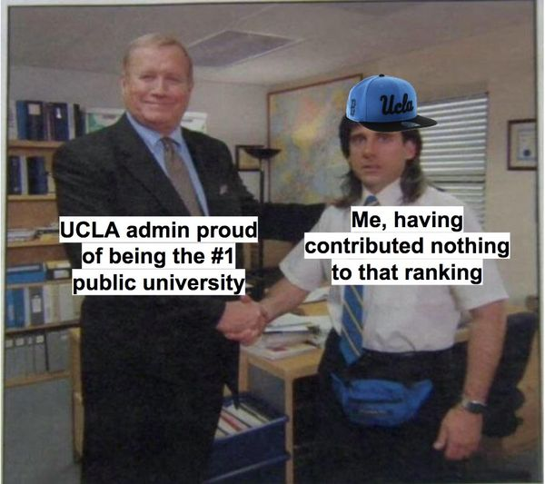
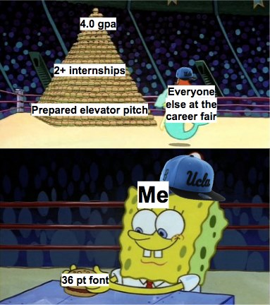

I'm a mod on UCLA Memes for Sick AF Tweens. This has been a point of both pride and deep shame during my time at school, but that's not the focus of this post is about. Being a moderator, the team and I approve every post before it goes up on the page, and so I've gotten pretty familiar with the kinds of content people post, and general trends on how they're received. I've also personally posted over 80 posts during my time at school, so this unsolicited advice also comes from that experience. So really this should be titled "Meme Making 101 for a Facebook College Group", but that's a bit wordy.
This is the majority of "work" (because let's be real, no one puts in more than 2 min of effort for most memes). Luckily, when making memes for a specific group of people, in my case college students at UCLA, there's already a predefined list of things a majority of them can relate to. Keep in mind, you need to strike a balance between having the subject be relatable to a majority of students, while keeping it niche enough for them to feel included in a sort of group.
The optimal subject would be one that relates to a recent experience or event. This could be memes about finals during finals season, memes about scandals relating to campus, memes about interviewing during recruitment season. These memes tend to do well, as the event would be still be fresh in the audience's mind.
Other subjects aren't necessarily tied to a specific time, but rather a shared experience throughout being in college. Common topics like this include imposter syndrome, struggling with classes, or loneliness. These are more difficult to do well, especially since it's more likely that someone has posted a similar meme before. Many memes we reject also fall under this category, simply because they aren't really UCLA-related(unless they just photoshop a UCLA hat)
Here's an unimportant yet well-kept secret: I make all my memes with Google Slides. Memes are usually text or pictures juxtaposed onto an image, and Google Slides is more than enough for this.
Now that you're on Google Slides with your idea, what template should you use, if any? I personally find my templates through Reddit or other memes I see on social media, which I then save in my "memes" Google Slide until I find a suitable idea to use them for. If you don't have your own meme stockpile saved up, some good places to find templates are kapwing's meme maker and r/MemeTemplatesOfficial on Reddit. If you want, you an even use a personal photo as a template, but generally I've found that those posts don't do very well.
Some general tricks: If you want to add a hat or an accessory to your image, search for the name in google images with Tools -> Color set to Transparent. This will give you only images of the object with a transparent background. If you're posting to facebook, keep in mind that Facebook only shows images well if they're generally square-shaped. If they're really tall or wide, they probably will get croppeed. Also, keep in mind the color of the text you're using if you're juxtaposing it over the image. I personally use black text highlighted with white but any color that is easily readable is fine.
Timing is unfortunately key, but really unpredictable. The number of likes a post gets the first two hours it's up will determine how well it will do in the long run. I find that if a post doesn't get at least 100 likes in the first two hours, it will probably not exceed 500 total. For this reason, try to post in the morning or afternoon. Unfortunately, since we require manual approval on my college page, it's not guaranteed to be published immediately after you submit. But you got to work with what you have.
I think the thing that stops people from making memes is the fear that they will "flop". But that begs the question: how few likes makes a post a flop? For my own memes, at this point in my college career, I consider a meme with >700 likes to have done really well, 300-700 to be okay, and under 300 to have flopped. But 299 likes is still a lot. Even 50. Imagine if you told a joke in the middle of your discussion section, and the entire room laughed. That's the equivalent of 30 likes.
My very first meme got over 900 likes. My second got 230. My third got 120. I'm a very self-conscious person, and this kind of turned me off from posting for a while. But making memes is a (yikes am I actually using this) science. You try some memes, and maybe they fail. You tweak how you present them, try again, and maybe they succeed. Maybe only your 9th meme is a hit. Who knows. You just need to keep in mind that memes on social media sites don't get likes only by their own merits, but by the site's algorithm, or how the first 30 people to see it were feeling that day, or just bad luck. You just gotta hit submit anyway, and hope that someone out there got a chuckle out of something you made.
With the article out of the way, here's some of my memes that don't suck:
 